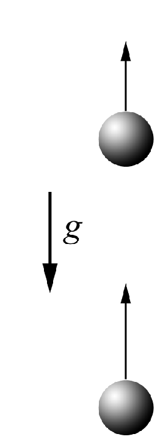

$1.3.1.$ Two balls with velocity $v$ are thrown vertically upwards from the same point with time interval $\Delta t$. How long after the second ball leaves, will they collide?
Solution

The velocity of the first ball after an interval of time $\Delta t$:
$$v_0 = v - g \Delta t$$
The relative velocity of the 1st and 2nd balls will remain constant and equal:
$$v_\text{average} = g \Delta t$$
Meanwhile, during the time $\Delta t$, the 1st ball has risen to a height of
$$L = v_0 \Delta t - \frac{g \Delta t^2}{2}$$
The time in which they will collide will find how:
$$t = \frac{L}{v_\text{average}}$$
$$\fbox{$t = \frac{v}{g} - \frac{\Delta t}{2}$}$$